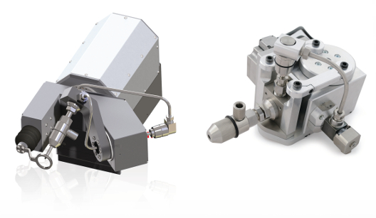
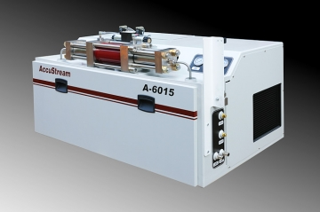
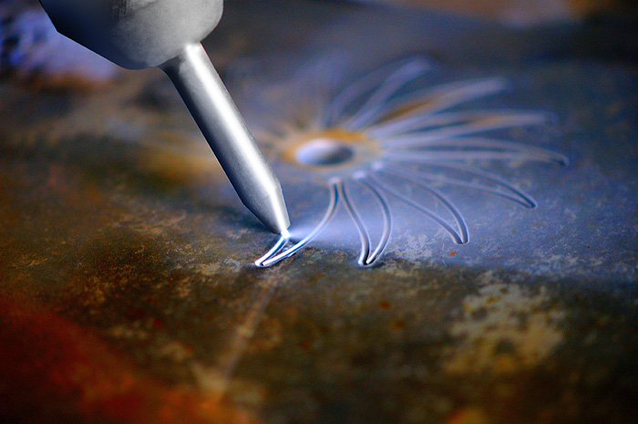
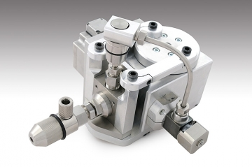
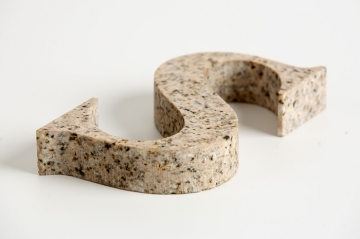
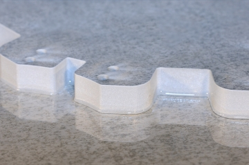
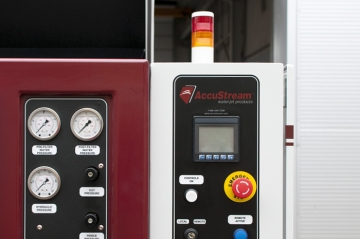
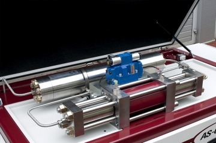
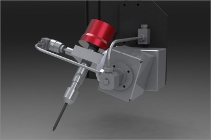
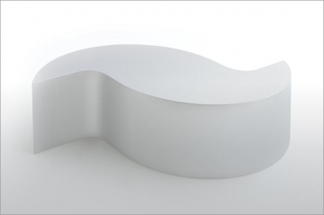

The lowest maintenance costs of the pump and head
Kimla is equipped with a high-pressure pump with a pressure booster and accessories from the renowned American company Accustream. Accustream pumps have the lowest maintenance costs of approximately $ 1.25 per hour of operation. It is worth noting that the maintenance costs of some manufacturers' pumps are even four times higher. This is particularly important because in the competitive market of waterjet services, operating costs may determine the success of a project.
Adjustment of the amount of abrasive
Kimla machines are equipped with the Accustream abrasive regulator with smoothly regulated amount of the garnet delivered to the head. This allows for precise adjustment of the amount of abrasive to the material being cut and specific machining conditions.
Compact design that takes up little space
Kimla's waterjet machines are characterized by an extremely compact design that requires little space and is convenient to operate. Access to the material lying on the bath grate is possible from four sides and allows the operator to freely operate the material and collect the cut details.
Abrasive hopper 300kg with charging system
The abrasive tanks supplied with Kimla machines have a capacity of 200 liters, which allows for many hours of cutting without having to interrupt work to replenish the abrasive. The charging container allows for convenient replenishment of the abrasive by using an automatically rising mushroom valve.
Smooth adjustment of the cutting
speed The feed speed when cutting on waterjet machines depends on the type of material, its thickness and the quality we want to achieve. In some machines, it is not possible to choose a different feed speed than the manufacturer assumed. Kimla machines can infinitely adjust the feed speed, allowing the operator to adjust the speed to specific requirements.
ACdigital servo drives
Waterjet machines should be driven by motors that allow reliable and repeatable reproduction of the workpiece. Therefore, drives should not be spared. Some companies (including reputable ones) use stepper motors for feed drive, which do not have position feedback and in the event of overload may lose this position "lose steps" destroying all material. Kimla waterjet machines use modern AC servo drives with vector control and position feedback for continuous control of the head position.
RTE
Interpolator Most control systems for cnc machines have had a similar logical structure of servo drive regulators for many years. It is a serial architecture. The set position from the interpolator is compared with the measured value and the deviation is transmitted to the position regulator, the speed is set from its output, the output of the speed controller gives a moment and only at the end is the servo drive. This approach causes significant delays 1/4 of the regulation, limiting the dynamics of regulation. Kimla machines use a regulator with parallel setting of position, speed, torque and spurt, which was possible thanks to the very fast data transmission between the interpolator and servo drives using real-time Ethernet (RTE). As a result, the dynamic accuracy of the machines has increased significantly. This is especially evident at high speeds and complex shapes.
Low pressure piercing
Some materials such as glass, stone ceramics, are prone to cracking and chipping during piercing. Kimla machines are therefore equipped with the possibility of low-pressure piercing, which makes it possible to limit the impact force of the jet when piercing the material.
Toolpath
generation software In waterjet machines, it is extremely important to dynamically control the speed of work, which should depend on the shape of the tool path. The software of Kimla machines has the ability to automatically generate tool paths based on dxf, plt, etc. files. and allows you to draw elements in the built-in editor. The toolpath generation module automatically generates the tool route taking into account the dynamics of speed and the diameter of the cutting stream. This is extremely important because many machines from other manufacturers, especially cheap ones (e.g. Chinese), try to use control systems for milling machines in their machines, which forces them to work at the lowest speeds at a given shape. The efficiency of such a solution is many times lower than that of Kimla machines and other leading manufacturers of waterjet machines.
Electronic gate angle correction
The use of a gate moving on a narrower side of the working area causes a significant increase in the convenience of operation, but some manufacturers have problems with maintaining the correct angle of the gate due to its flexibility and lack of synchronization between its drives from both sides. Kimla has developed and implemented an electronic gate angle correction system that, when switched on, automatically sets the correct angle regardless of the initial setting of the drives.
The control systems of
numerical machine tools, due to their very rapid development, age (substantively) up to ten times faster than their mechanics. The control system in a ten-year-old machine often looks as archaic as a century-old mechanic. Due to the rapid development, we have integrated a module with the control system that allows 1/4 more upgrade of the control system software. Kimla also offers long-term customers the replacement of entire control systems at a very attractive cost.
Advanced diagnostics - oscilloscope
A diagnostic module has been integrated into the control system, which enables remote servicing and diagnostics of the control system, which significantly facilitates and speeds up troubleshooting.
Linear rolling bearings with preload
All Kimla machines are linearly bearing using a system of guides and rolling blocks with preload. This ensures high rigidity of the driving elements and their durability is counted in tens of thousands of kilometers.
Possibility of adjusting the grate
During multiple changes of the grate, due to the inaccuracies of the ribs made by users, it is possible to precisely adjust the height of the grate so that the gap between the nozzle and the material is always within the optimal range.
Cutting in five axes
Our company is proud to present its proprietary solution for five-axis waterjet cutting. The control system allows you to procate directly from the program in three modes: fixed wall angle (also on arcs), fixed head angle and radial deflection, in addition, the path can be controlled using G-CODE. Innovative solutions in the field of construction and control system of our waterjets were appreciated and honored with the Gold Medal at the Poznań International Fair ITM.
Dual synchronized gate drive
Due to the large width of the gate, Kimla machines are always equipped with a double independent gate drive on servo drives on both sides, which avoids twisting and angulation of the gate, which is the case with single drives.
High operating speeds and accelerations
Most waterjet users are convinced that these machines are slow and do not develop high machining speeds. However, the speed of development of waterjet technology is so high that it is necessary to verify these claims. Thin and relatively soft materials such as aluminum, ceramics, etc. it is possible to cut much faster today than a few years ago and for this reason with these materials the limit of cutting speed is often no longer the waterjet cutting technology itself, but the limitations resulting from the capabilities of the control system and drives. Kimla machines are therefore equipped with solutions that enable operating speeds of up to 0.5m/s. This results in the possibility of even repeatedly increasing the cutting efficiency, especially with thin materials.
Rigid spatial bath construction and self-supporting
structure The main geometric concepts of the bodies of the waterjet cutting machine are basically divided into monolithic solutions and those in which the bath with grate and material are not mechanically connected to the head positioning kit. Some manufacturers explain that the separation of the bath from the coordination system with the head has a beneficial effect on the processing, since vibrations do not transfer. Vibrations first of all should not be. And once they are, the cutting head and the cut material should move together. This is the case in the monolithic version, in which the coordination system is mounted on the bath. There is then no relative movement between these elements, which has a positive effect on the accuracy of machining. We can propose both solutions depending on individual beliefs, but we tend towards a monolithic solution. Another aspect is the boom or gate, but here there is no doubt that a mutually supported gate with independent drives is a better solution and even companies that used a boom eventually withdraw from such solutions.
Convenient movable control
panel Kimla machines are equipped with a mobile control panel that can be moved in a range of several meters, which allows convenient control of the machine.
Hot-dip galvanized Waterjet bathtub
is a considerable expense and therefore a machine of this type has to work for many years. Sand and water will damage the best varnish and after a few years the machines only with the varnish coating look very old, They are corroded and battered. Our machines are hot-dip galvanized before painting, which ensures deep zinc penetration enabling long-term corrosion protection.
Stainless steel
finishes Despite the zinc, there are elements particularly vulnerable to ragging and damage. In such cases, we finish them with a non-rust, which looks aesthetically pleasing even in extreme conditions.
All water-protected
drives In waterjet machines, there is water and sand everywhere, which exposes the drive elements and linear bearings to damage. All drives are shielded from direct action by these factors
Airbag Waterjet
machines are noisy. And in particular, the stream of water in the air is loud. Even this small section (about 2mm), which overcomes water from the nozzle to the material, generates a lot of noise. Therefore, in the machines, Kimla waterjets are installed displacement chambers (airbag) that allow you to raise the water surface during the cutting and lower it in order to facilitate the removal of the material. The process of raising the water surface takes several seconds and provides greater comfort of work also by reducing splashing.
Independent, external cooling
system The pump is equipped with an external oil cooling system that allows the heat exchanger to be led out of the building, e.g. outside the building, which reduces the amount of space occupied and reduces noise
4.1 l/min at 50HP and 4150bar
pumps with a power of 50HP and a pressure of 4150 bar have an output of 3.8l. Thanks to the modern design of the pump, Accustream achieved an output of 4.1 l/min
Modern pressure booster with symmetrical seals
The seals of the high-pressure cylinders are the same active and passive sides, which reduces the range of components when replacing seals.
No threaded cylinders - pins
Most pressure boosters have threaded cylinders that are expensive and impractical. They often bake, which leads to the need to replace not only the cylinders, but also the elements of the bodies cooperating with them, which results in multiplying operating costs. Accustream pumps use pins and unthreaded cylinders. In case of damage, the pins are very cheap and easy to replace.
Larger diameter cylinders
The cylinders have a much thicker wall, which increases the life of the cylinder, which thus has a greater fatigue life.
Nozzles 0.014 and tubes 0.040 (1.016mm)
In Kimla machines with pumps, Accustream 50HP can use nozzles up to 0.014 (0.36mm) and mixing tubes 0.040 (1.016mm). With smaller pumps, only tubes up to 0.030 (0.76mm) can be used, which directly reduces productivity.
Table made of galvanized sheet strips (no gratings)
In waterjet machines, the material lies on a special grate, under which there is water that dissipates the energy of the water jet. The material is cut, but the grate is also cut. Often, gratings are used in waterjet cutting machines for the grate. Unfortunately, due to their small thickness, they quickly deteriorate and need to be replaced often. Kimla waterjet machines are equipped with a segment grate consisting of high strips of galvanized sheet, which ensures a high service life and the possibility of replacing individual ribs.
Basic options
| Waterjet type |
Waterjet Kimla
Streamcut 2111 |
Waterjet Kimla
Streamcut 3116 |
Waterjet Kimla
Streamcut 4121 |
Waterjet Kimla
Streamcut 6121 |
|---|---|---|---|---|
|
Working area dimensions
[mm] |
2100 x 1100 | 3100 x 1600 | 4100 x 2100 | 6100 x 2100 |
| Operating mass filled with water [kg] | 4500 | 6200 | 9800 | 12,000 |
| Z axis range [mm] | 200, 250, 300, others on request | |||
|
Maximum cutting thickness [mm] |
200 | |||
| Pump type | Pump with an amplifier with ceramic plungers (very durable) | |||
| Pump power | 37kW (50KM) by AccuStream - USA | |||
| Pump expansion system | Reducing pressure during the journey and after switching off the pump | |||
| Cutting head drive | Servo AC with digital encoders | |||
| X and Y axis drive | Servo AC, backlash-free helical drive Güdel Switzerland | |||
| X axis drive | Servo AC, ball screw | |||
|
Maximum travel speeds
X, Y, Z [m / min] |
54 | |||
|
Permissible
table load [kN / m2] |
15 | |||
| Bath | 3D multi-chamber structure with very high stiffness | |||
|
Positioning resolution
[mm] |
0.001 | |||
|
Abrasive grain size
[mesh] |
80-200 | |||
|
Abrasive feeder tank
[kg] |
300 | |||
|
Abrasive delivery system |
Pneumatic | |||
Pump indicators A-6015
Pump AccuStream A-6015
Cutting waterjet in steel
5D Waterjet head
Cutting stone on a waterjet
Element cut with waterjet
AccuStream Pump
Pressure booster
Waterjet 5D prototype head
Cutting waterjet in aluminum
Cutting out the polyester mat
Streamcut water cutting
waterjet turbine cutting
waterjet-5 axis
Aluminum waterjet
12mm waterjet
Gold medal of ITM 2011
for Waterjet
Sample Configuration
Waterjet StreamCut 4121
.jpg)
Waterjet StreamCut 3030 used Tractor
Waterjet StreamCut 2060
Waterjet StreamCut 3116 used Tractor
Waterjet StreamCut 0505 used Tractor
Waterjet StreamCut 2010 5D